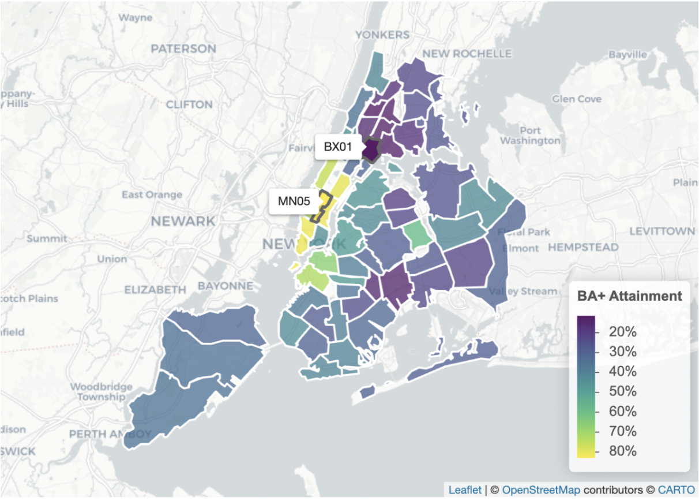
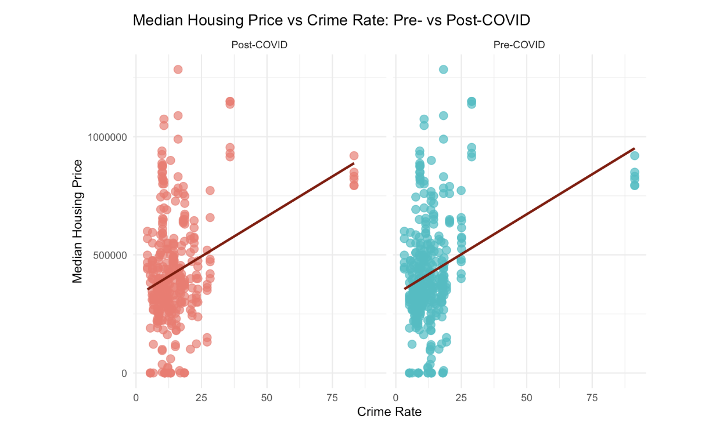
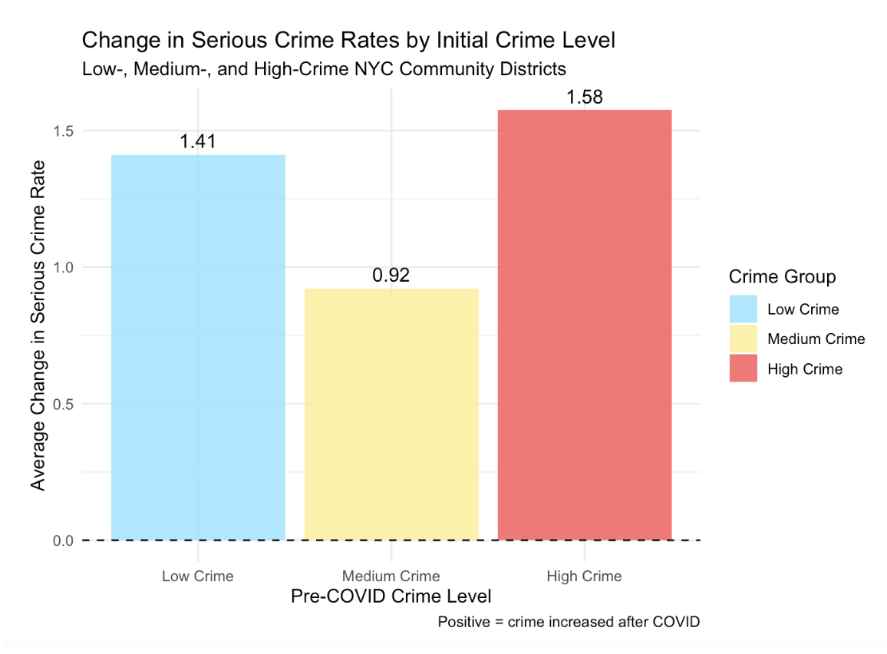
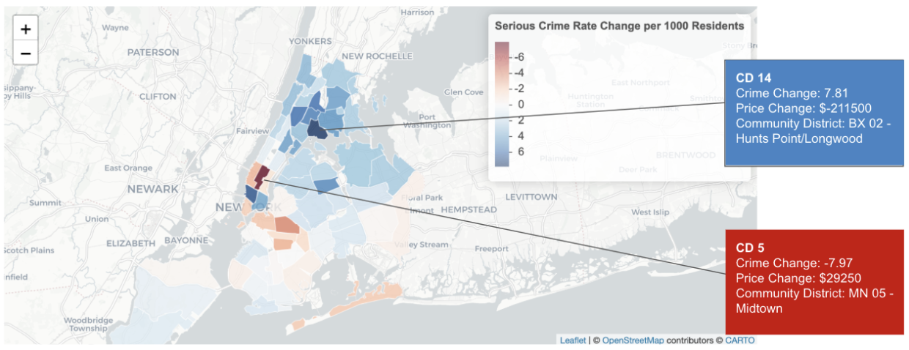
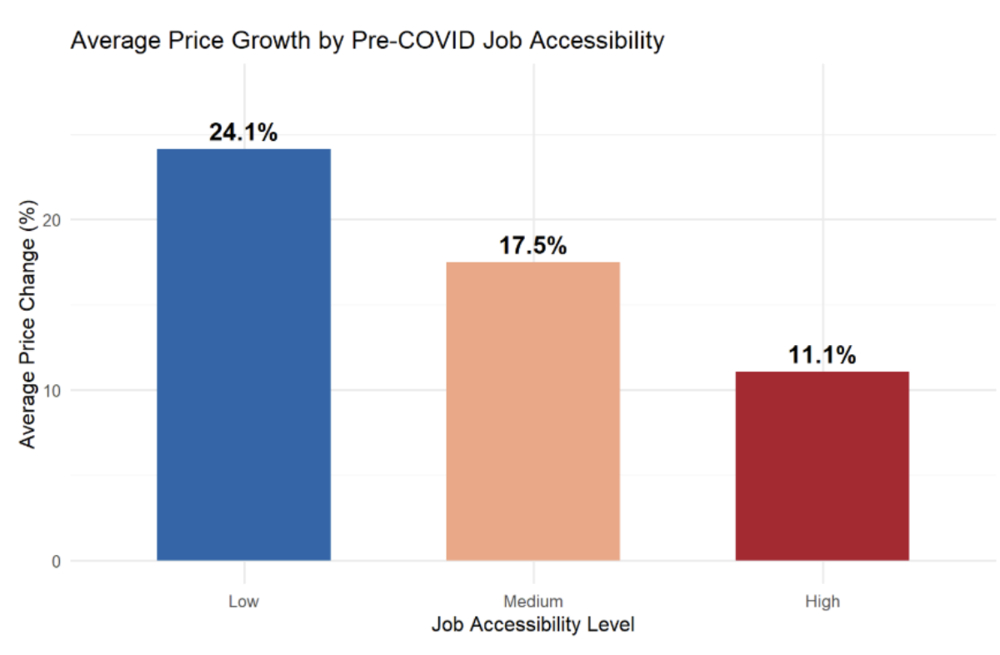
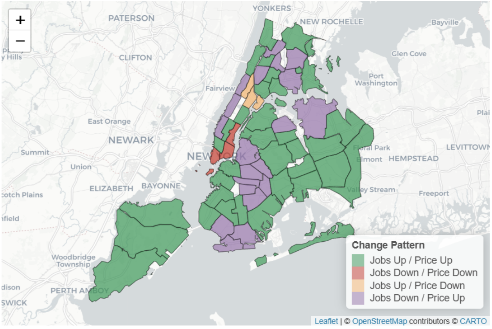

Summary Report
Introduction
The COVID-19 pandemic was a global shock with lasting impacts that continue to persist in everyday life. Understanding these changes is essential to identifying where aid is needed the most. This research aims to examine whether COVID-19 reshaped the relationship between neighborhood characteristics and property values across NYC’s 59 Community Districts?
The neighborhood characteristics chosen for analysis reflect aspects of residents’ quality of life. This includes public transportation accessibility, educational attainment, crime rates, job accessibility, and residential density. To examine these changes, the analysis compares pre-COVID (2017-2019) and post-COVID (2021-2023) patterns.
Relation to Prior Work
The New York City Comptroller’s Office emphasizes that post-COVID recovery has been uneven across neighborhoods. While the city has shown resilience throughout the years, housing shortages and affordability remain major concerns that may have been further challenged by the pandemic. The contribution of our research, in addition to an in-depth analysis of each neighborhood characteristics as an individual unit, is how they interact with one another and, collectively, how well they predict property values, to assess their relation.
I. Tranportation Ridership and Accessibility
Did the relationship between transit accessibility, ridership levels, and property values change from pre-COVID and post-COVID across NYC’s CDs?
II. Educational Attainment
Our analysis also examined Educational Attainment (EA) as an essential neighborhood characteristic that may affect property values. Specifically, we wanted to determine if the COVID-19 pandemic influenced property values when comparing pre- and post-pandemic eras through the following research question:
Did the strength of the relationship between neighborhood educational attainment (EA) and property values change post-COVID, and did this change differ across NYC’s CDs?
Historically, neighborhood EA has reliably predicted property values, with highly educated workers driving economic demand and raising real estate prices. We expected higher-education CDs to surge during the pandemic recovery (e.g., 2021-2023). Instead, findings reveal a dramatic and statistically significant reversal of this trend.
To isolate the pandemic’s impact on market demand from demographic shifts, we measured each CD’s EA once using 2019 American Community Survey (ACS) data. We held it constant across both periods (pre-COVID: 2017-2019; post-COVID: 2021-2023). As shown in the choropleth map below, EA levels vary drastically across the city’s 59 CDs, ranging from a low of 11.8% “BA+ Attainment,” where BA+ signifies at least a “Bachelor of Arts” degree, in the South Bronx (BX01) to a high of 82.7% in Manhattan’s Midtown area (MN05).

By holding EA constant, we were also able to focus our analysis on determining if neighborhoods with the same 2019 education level experienced different property value growth patterns post-COVID. Initial research showed a correlation between EA and property values in pre- and post-era settings. The overall correlation between these variables declined modestly, from r = 0.77 to r = 0.74. However, this modest 0.03 decline in correlation concealed a profound shift in growth dynamics. When dividing NYC’s 59 CDs into three equal groups by education level (Low, Medium, High terciles), a complete reversal of the traditional “education premium” emerged. Specifically, low-education neighborhoods in the bottom tercile, with a median BA+ EA of 19.2%, saw a 26% increase in median property value. Conversely, high-education neighborhoods in the top tercile, with a median EA of 53.0% BA+, grew by only 11.9%, less than half the rate of their lower-attainment counterparts. The tercile chart below highlights the stark growth differential between these opposing educational neighborhoods.

As shown below, a two-sample t-test confirmed that this 14.2 percentage-point difference in growth rates between education terciles was statistically significant, supporting the conclusion that COVID-19 fundamentally reshaped the relationship between neighborhood characteristics and property values.

To confirm these results weren’t limited to Manhattan, we ran individual borough-level linear regressions. Our analysis found a negative relationship between education and growth across all boroughs, indicating a “growth penalty” across the city. Although the impact varied, all boroughs showed that higher education levels were associated with lower post-COVID growth in property values.

These findings suggest that the pandemic challenged agglomeration effects, as definitions of employment changed with the rise of remote work, reducing the need to live near jobs in high-education NYC CDs. Additionally, general housing affordability motivated buyers to move to lower-cost areas. Outer-borough CDs, such as the South Bronx, which had previously been undervalued, experienced higher rates of property value appreciation. These results further indicate that the traditional “educational premium” associated with higher-education CDs led to post-COVID searches for lower-cost areas. Our research demonstrates how the pandemic reversed the well-established logic between EA and NYC real estate. As a result, we address our overarching question by showing that COVID-19 not only disrupted the real estate market but also reshaped the relationship between neighborhood characteristics and property value.
Additional information, including detailed methodology and supplementary diagnostic plots, is available in the comprehensive project report linked below.
III. Crime Rates
A key component of the broader question of whether COVID-19 reshaped the relationship between neighborhood characteristics and property values across New York City’s Community Districts is understanding how the role of crime evolved over this period. Crime has long been viewed as a negative neighborhood amenity influencing residential choice and housing demand, but the COVID-19 pandemic disrupted mobility, policing, and neighborhood use in ways that may have altered this relationship. This portion of the analysis focuses on how the impact of serious crime on property values changed from the pre-COVID (2017-2019) to the post-COVID (2021-2023) period, and whether districts with different baseline crime levels experienced these shifts differently.
To address this question, this study integrates Community District-level serious crime rates with housing sales data and compares patterns across the two periods. The analysis uses descriptive comparisons, scatterplots, and grouping districts by pre-COVID crime terciles to assess both how crime changed after COVID and whether changes in crime were associated with shifts in median housing prices. The datasets used are the NYC Department of Finance housing sales data, NYPD crime statistics from the NYU Furman Center, and Pluto data to link properties to Community Districts. These methods directly test whether COVID altered the strength or consistency of the crime-price relationship rather than simply changing crime levels alone.
Several visualizations most clearly connect this analysis to the overarching question.
Side-by-side scatterplots of crime rates versus median housing prices before and after COVID show that the average relationship between crime and property values remained relatively flat across periods, suggesting no fundamental citywide shift. 
A bar chart of post-COVID crime changes by pre-COVID crime group demonstrates that increases in serious crime were widespread but largest in already high-crime districts, indicating uneven neighborhood impacts. 
An interactive map displaying simultaneous changes in crime rates and housing prices across Community Districts highlights substantial spatial heterogeneity, reinforcing that COVID-era effects varied sharply by neighborhood. 
Overall, the findings about crime align with prior literature viewing crime as a negative amenity but suggest that COVID made its influence on housing prices more heterogeneous and less predictive on average. Future work could incorporate additional neighborhood characteristics (such as work-from-home exposure, transit access, or demographic change) to better explain how and why COVID reshaped neighborhood-price dynamics across NYC.
IV. Job Accessibility
A central component of understanding whether COVID-19 reshaped neighborhood-property value relationships is examining how the value of job accessibility changed. Job accessibility, measured as jobs within 1 kilometer of a neighborhood’s centroid, captures the traditional urban economics principle that proximity to employment centers commands a housing premium. The pandemic’s remote work revolution may have weakened this relationship as workers gained location flexibility.
This analysis integrates LODES employment data from the Census Bureau with NYC DOF Rolling Sales across all 59 Community Districts, comparing pre-COVID (2017-2019) and post-COVID (2021-2023) periods. Job accessibility was calculated by counting jobs within 1km of each Community District centroid, then correlated with median property values for each period.
The correlation between job accessibility and property values remained remarkably stable, going from r = 0.630 pre-COVID to r = 0.618 post-COVID. Fisher’s Z-test produced a p-value of 0.92, well above 0.05, meaning this small change was not statistically significant. The overall premium for job-accessible locations persisted despite the rise of remote work.
Three visualizations illustrate these findings.

Low job accessibility neighborhoods experienced the highest average property value growth post-COVID, outperforming medium and high accessibility areas. This supports the idea that remote work gave buyers more flexibility to choose neighborhoods farther from job centers.

The bivariate map categorizes each Community District by whether jobs and property values increased or decreased post-COVID. The outer boroughs are predominantly green (‘Jobs Up / Price Up’), while Manhattan shows a mix of patterns, including districts where jobs declined but prices still rose.

The scatter plot shows a weak positive correlation (r = 0.18) between job accessibility change and property value change across Community Districts. There’s a lot of variation across boroughs. Bronx and Brooklyn districts saw some of the highest property value gains regardless of whether jobs increased or decreased. While the overall job-price correlation remained stable, the pattern of price growth favored lower-accessibility neighborhoods. This suggests that even though job proximity still commands a premium, remote work may have made buyers more willing to consider locations farther from job centers than they would have been before the pandemic.
Residential Density
Did high residential density become a penalty for property values post-COVID across NYC’s CDs, and did this “density penalty” vary by baseline density level?
Conclusion
Next Steps
To refine our model, the neighborhood characteristics that didn’t pose as strong predictors of property values could be substituted for other factors of examination to improve its accuracy. With additional time and resources, this improved model could be applied to other major U.S. cities to further test its validity. While also allowing for a more comprehensive analysis of where New York City’s post-COVID progress stands.